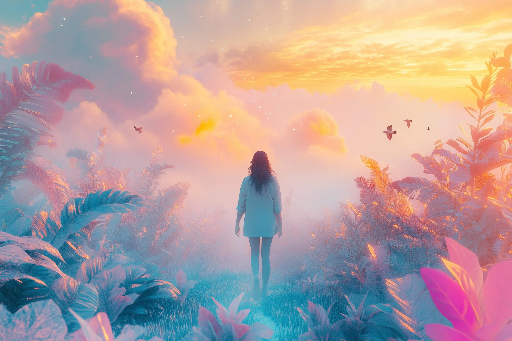
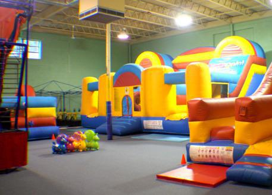

WHAT IS YOUR FUTURE VISION?
How will you begin to dream something no machine can dream?

I would begin with examples, references and hope, not everything always needs be real to be a dream.
If memory is built from shared stories, which dreams do you want written into the past?

I want dreams of nostalgia written into the past. This nostalgia is our present but future's past.
What remains of you when all your stories are rewritten?
If you seek to realize your hopes through AI, how will you ensure that it remains faithful to your will?
When all my stories are rewritten, what remains is my idea. I will always remain a part of the story even if it has been changed.
Balance is key, you can guide AI but you yourself will need to make changes. This is a two person team.

-
Which relationships will make your life meaningful and magical. How do you nurture them?
-
What are the aesthetics of the places that you live your life and how did they come to be that way?
-
How do you spend your time? What stories do you seek out - to tell or to listen to?
-
How will it sound? What will the rhythm of your day be?
-
How will you move through the world?
-
How do you spend your time? What stories do you seek out, whether to share or to absorb and pass on?
Relationships with life can be meaningful and magical, how we nuture it is by moving forward and learning from the past.
Take my home for example, it's full of history but we all live forward.
To live forward we can seek out stories made from the past. That is the future vision I have.
Songs of Nostalgia written by the future.